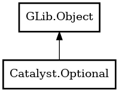

Optional
Object Hierarchy:

Description:
public class Optional<T> : Object
A container object which may or may not contain a non-null value.
Content:
Properties:
Creation methods:
- public Optional.empty ()
Creates an empty instance.
- public Optional.of (owned T value)
Creates an optional from a non-null value. It is an assertion failure
to provide a null value.
- public Optional.of_nullable (owned T value)
Creates an optional from a potentially null value. If the provided
value is null, the optional will be empty.
Methods:
- public Optional<T> filter (Predicate<T> predicate)
Filters the value based on the given predicate.
- public Optional<A> flat_map<A> (MapFunc<Optional<A>,T> map_func)
Applies the given mapping function if the value is present.
- public Optional<A> map<A> (MapFunc<A,T> map_func)
Applies the given mapping function if the value is present.
- public T or_else (T other)
Returns the value if present, otherwise the other.
- public T or_else_get (SupplyFunc<T> supplier)
Returns the value if present, otherwise the value supplied by the
supplier function.
- public T or_else_throw (SupplyFunc<Error> supplier) throws Error
Returns the value if present, otherwise throws an error.
Inherited Members:
All known members inherited from class GLib.Object
- @get
- @new
- @ref
- @set
- add_toggle_ref
- add_weak_pointer
- bind_property
- connect
- constructed
- disconnect
- dispose
- dup_data
- dup_qdata
- force_floating
- freeze_notify
- get_class
- get_data
- get_property
- get_qdata
- get_type
- getv
- interface_find_property
- interface_install_property
- interface_list_properties
- is_floating
- new_valist
- new_with_properties
- newv
- notify
- notify_property
- ref_count
- ref_sink
- remove_toggle_ref
- remove_weak_pointer
- replace_data
- replace_qdata
- set_data
- set_data_full
- set_property
- set_qdata
- set_qdata_full
- set_valist
- setv
- steal_data
- steal_qdata
- thaw_notify
- unref
- watch_closure
- weak_ref
- weak_unref